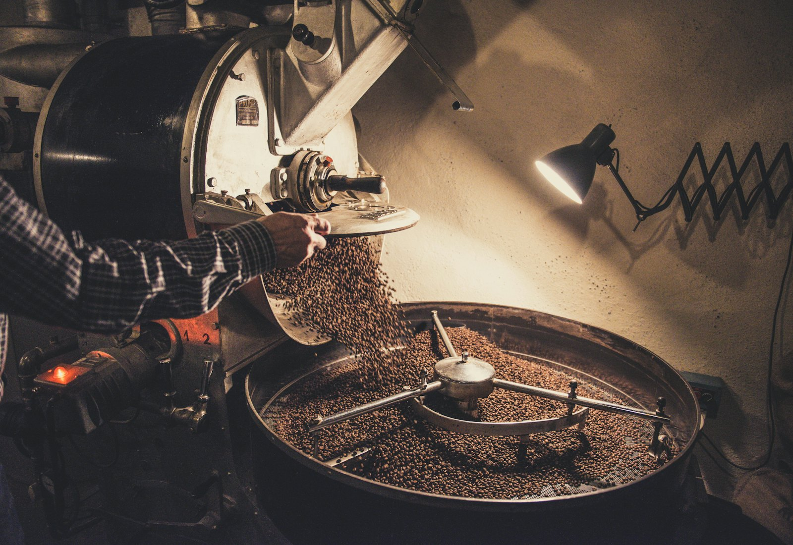

Rang sáng nay, pha chiều nay.
Thềm là một xưởng rang nhỏ nằm ngay sau quầy pha. Mỗi sáng, hạt được rang theo từng mẻ năm ký, nghỉ cho ổn định rồi mới lên quầy. Đường cong bên dưới là nhật ký của mẻ hôm nay.
Mẻ #041 · hôm nay
- Hạt
- Arabica Cầu Đất
- Khối lượng
- 4,8 kg
- Độ rang
- Vừa sáng
- Tổng thời gian
- 12:30

hồi nhiệt · 1:10 · 92°C
hết sấy, hạt ngả vàng · 4:30
nổ lần 1 · 9:40 · 196°C
ra lò · 12:30 · 205°C


Máy rang đặt ngay sau quầy.
Ở Thềm, ly cà phê bạn uống được rang cách đó vài bước chân. Chúng tôi chọn hạt từ những vườn nhỏ ở Lâm Đồng và Đắk Lắk, rang mẻ nhỏ để giữ được vị riêng của từng vùng, rồi ghi lại mọi mẻ vào sổ nhật ký như tờ bạn vừa xem.
- Lịch rangThứ Ba, Thứ Năm, Thứ Bảy · 7:00 – 9:00
- Mỗi mẻ5 kg hạt xanh, rang khoảng 12 – 14 phút
- Nghỉ hạtÍt nhất 48 giờ trước khi pha espresso
- Ghé xemNgồi quầy vào buổi sáng ngày rang để xem trọn một mẻ
Một mẻ rang đi qua năm màu.
Hạt cà phê đổi màu theo nhiệt độ. Mỗi món trong menu được ghi độ rang theo thước này, để bạn biết trước ly của mình sẽ chua sáng hay đậm đắng.
Hạt xanh
Hạt sống, cứng, mùi cỏ khô. Chưa pha được.
Sấy
Hạt mất nước, ngả vàng, thơm mùi bánh mì nướng.
Nổ lần 1
Hạt nứt tách, màu quế. Rang sáng: chua thanh, hương trái cây.
Phát triển
Đường caramel hóa. Rang vừa: ngọt, tròn vị, hợp pha sữa.
Rang đậm
Nổ lần 2, dầu nổi bóng. Đắng sô-cô-la, hợp pha phin.
Trên quầy tuần này
Ba lô hạt đang được pha. Mỗi lô hết là đổi, nên menu thay theo tuần.
| Lô | Hạt | Độ rang | Nốt hương | Pha ngon nhất |
|---|---|---|---|---|
| #041 | Arabica Cầu Đất, Lâm Đồng | Sáng | đào chín, mật ong, trà đen | Pour-over V60 |
| #039 | Arabica Sơn La · sơ chế mật ong | Vừa | caramel, hạnh nhân, cam | Espresso, latte |
| #037 | Robusta Đắk Lắk · hái chín | Đậm | sô-cô-la đen, đường thốt nốt | Phin, bạc xỉu |

Ba khu, 48 chỗ ngồi.
Ghế quầy để xem rang, tầng hai yên tĩnh để làm việc, và mảnh sân sau có cây cho buổi chiều.
Xem không gian